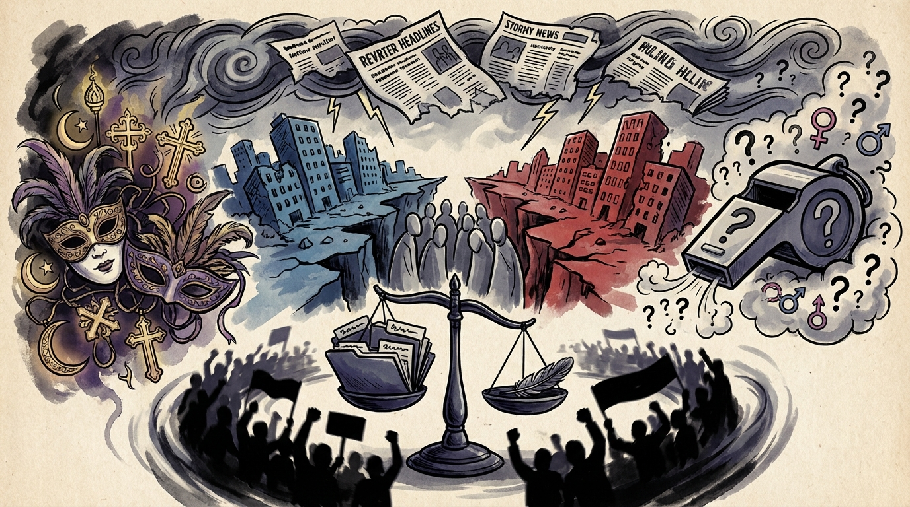

The Daily Globe: UN Experts Call Epstein Network 'Crimes Against Humanity', Epstein Files Spark Political Accountability Debate, and Lula Distances Himself from Carnival Controversy
Published on 2026-02-22

World
- UN Experts Call Epstein Network 'Crimes Against Humanity'
United Nations experts have labeled Jeffrey Epstein's network as potential crimes against humanity, demanding full investigations. The scandal has reignited debates on elite accountability and sex trafficking, with MAGA supporters dismissing it as a 'hoax' while others call for global transparency.
- Human Rights Crisis in Iran - IRGC Killing Children
Reports of IRGC killing children under 18 in January 2026 have fueled calls for international intervention, UN investigations, and sanctions. Hashtags like #IranRevolution2026 are amplifying demands for accountability.
- Biafra Independence Movement Gains Israeli Parliament Support
A Knesset debate comparing Igbo suffering in Nigeria's Biafra region to the Holocaust has sparked global calls for intervention, with claims of up to 6 million deaths since 1967.
- Anti-Muslim Rhetoric Sparks Outrage in US Politics
Florida Rep. Randy Fine's inflammatory statements preferring 'dogs over Muslims' and rejecting Sharia law have exploded into debates on Islamophobia, free speech, and religious freedom.
USA
- Epstein Files Spark Political Accountability Debate
Ongoing fallout from Epstein files with debates on accountability, Trump's past ties, and rising political violence being normalized as background noise in political discourse.
- ICE Operations and Immigration Enforcement Controversy
Democratic outrage over ICE operations and voter ID laws, with Jerry Nadler facing calls to resign over comments interpreted as suggesting Americans could be justified in shooting masked ICE agents.
- Political Violence Rhetoric Escalates
Heated TV debate between Gutfeld and Tarlov on media bias and crime went viral. Rising tensions over political violence rhetoric ahead of 2026 midterms.
- Right-Wing Internal Divisions Deepen
Internal right-wing infighting and criticisms of performative social media activism, with calls for unity against the left amid doxxing and leaking scandals.
Brazil
- Lula Distances Himself from Carnival Controversy
President Lula responded to evangelical backlash over a São Paulo carnival school's parade critiquing 'neoconservatives' and traditional family values, saying 'Não sou carnavalesco' (I'm not a carnival organizer).
- Right-Wing Social Media Activism Criticized as Performative
Critics argue the Brazilian right-wing has become focused on likes, engagement, and artificial outrage rather than discussing public policies or building a national project.
- Gender Debate in Brazilian Football Over Female Referee
A soccer match between Bragantino and São Paulo ignited controversy over the appointment of a female referee, highlighting ongoing gender debates in Brazilian football.
- Murder of 82-Year-Old Nun Sparks Violence Outrage
The brutal murder of an elderly nun in a convent in Paraná has fueled discussions on rising violence in southern Brazil.
Topic Index
- epstein-scandal
- human-rights-crisis
- iran-protests
- biafra-independence
- islamophobia-debate
- political-accountability
- immigration-enforcement
- political-violence